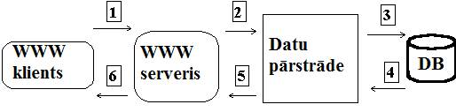

Vispārīgas zināšanas par Internetu
Pieslēgšanās Interneta tīklam. Internet pamatprotokoli.
Programmas darbam ar protokolu FTP
Tīmekļa pārlūkprogrammas (Internet navigatori)
Statiskās tīmekļa vietnes ar pasīvām interneta lappusēm
Statiskās tīmeķla vietnes ar interaktīvām interneta lappusēm
Dinamiskās tīmekļa vietnes, kuru interneta lappuses formējas servera pusē
Dinamiskās tīmekļa vietnes, kuru interneta lappuses formējas klienta pusē.
WWW tehnoloģiju izmantošana datu bāzes pieejai
DB satura vienreizīga vai periodiska pārveidošana statiskos dokumentos
Piekļūšana datu bāzei servera pusē
Piekļūšana datu bāzei klienta pusē
Globālie tīkli aptver ļoti plašas teritorijas, Internets arī ir globāls tīkls. Internets ir globāla, savstarpēji savienotu datoru un ierīču tīklu sistēma, kas datu pārraidei izmanto standarta Interneta Protokolu (IP), lai apkalpotu miljardiem cilvēku visā pasaulē. Būtībā, Internets ir tīkls no tīkliem, kas sastāv no miljoniem dažādiem, mazākiem publiskiem, privātiem, biznesa, akadēmiskajiem un valdības tīkliem, lokāliem un globāliem, kas savā starpā savienoti ar neskaitāmām elektroniskām, bezvadu, optiskajām tīklu tehnoloģijām. Internetā pieejama ļoti plašs informācijas klāsts, Internets ietver e-pasta, datu pārraides, tērzēšanas un tīmekļa dokumentus.
Internets ir atvēris un attīstījis pavisam jaunas komunikāciju formas, kā piemēram čatošana, forumi, blogošana. Tāpat attīstījās arī tādi pakalpojumi kā Interneta veikali, dažādi interneta biznesa pakalpojumi u.c. Tas ir kļuvis par neatņemamu sastāvdaļu daudzu cilvēku dzīvē, jo no tā ir atkarīga biznesa darbība, komunikācija ar cilvēkiem, utt.
Vārds „Internets” ir saīsinājums no termina „Internetwork”, kas nozīmē Starptīkls. Internetu mēdz dēvēt arī par Tīklu vai Tīmekli. Terminu Internets, ja to lieto kā visu pasaules IP tīklus, raksta kā īpašvārdu – ar lielo burtu. (Tomēr mūsdienās tas aizvien vairāk tiek uzskatīts par vispārēju jēdzienu, un tiek lietots ar mazo burtu.) Termini Internets un Globālais tīmeklis bieži tiek lietoti kā sinonīmi, tomēr tā nav, tie ir dažādi termini. Internets ir tehnikas un programmatūras infrastruktūra, kas nodrošina globālu sakaru sistēmu starp ierīcēm, bet Globālais tīmeklis ir viens no pakalpojumiem, kas izmanto Internetu, lai komunicētu. Tas ir hiperteksta dokumentu un citu resursu kopums, kas ir savstarpēji saistīts ar hipersaitēm un URL.
Interneta pirmsākumi meklējami XX gadsimta 60. gadu sākumā, kad tika pētīta pakešu komutācija. Pakešu komutācijas tīkli ARPANET, Mark I, NPL un citi, tika izstrādāti 60. gadu beigās un 70. gadu sākumā, izmantojot dažādus protokolus. Tieši ARPANET tika izstrādāts izmantojot pakešu komutācijas un rindas teorijas tehnoloģijas, un tas noveda pie Interneta attīstības, kur vairāki tīkli varēja tikt savienoti tīklā no tīkliem. 1983. gada 1. janvārī tika ieviests TCP/IP protokols un tādējādi tika ielikts pamats mūsdienu Internetam. 1984. gadā tika izstrādāta Domēnvārdu sistēma (DNS). Internets kļuva plaši pieejams publikai 1991. gadā, bet 1993. gadā parādījās interneta pārlūks Mosaic. Piecu gadu laikā, Interneta popularitāte izauga līdz 50 miljoniem cilvēku, tika piereģistrēti vairāk nekā miljons domēnvārdu. No 90. gadiem, tiek uzskatīts, ka interneta popularitāte auga pa 100% katru gadu. Kopš tā laika, Internets ir ļoti iespaidojis gan kultūru, gan komerciju. Uzplauka tūlītejas saziņas līdzekļi, tādi kā VoIP, čati, e-pasti, blogi un forumi. Inteernets turpina augt, un tas ir lielākais izklaides un uzziņu avots mūsdienās. Arvien vairāk un vairāk datu tiek pārsūtīts ar aizvien ātrākiem ātrumiem, izmantojot optiskos kabeļus, kas nodrošina ļoti augstus datu pārraides ātrumus. Arī Latvijā internets ir ļoti populārs, un to mūsdienās lieto lielākā daļa iedzīvotāju. Jāatzīmē, ka Latvijā ir viens no ātrākajiem interneta datu pārraides ātrumiem pasaulē.
Internets ir decentralizēta vide, kas nozīme, ka tajā nav kāda centrālā vadība, kas uzrauga Internetā pieejamās informācijas klāstu. Par informācijas saturu ir atbildīgi interneta lietotāji. Populārākie Interneta protokoli mūsdienās ir IP, TCP, UDP, DNS, ka arī daudzi citi. Populārākie Interneta servisi, kas izmanto šos protokolus ir e-pasta servisi, Globālais tīmeklis, sesiju pieeja, IRC, u.c. Domājams, nākotnē Internets turpinās paplašināties, piedāvājot arvien jaunus paklpojumus un pilnveidojot jau esošos, kā piemēram, norēķināšanos Internetā, kas šobrīd, lai gan ir iespējama, tomēr ir diezgan nedroša. Tāpat ir grūtības ar liela informācijas materiāla pārsūtīšanu interneta vidē, kā piemēram, video.
Pieslēgumu Internetam iespējams nodrošināt, noslēdzot līgumu ar kādu no Interneta Pakalpojumu piegādātāju (ISP – Internet Service Provider). ISP ir starpnieks starp Internetu un datoru, nodrošinot pieslēgumu caur maršrutizāciju pa sakaru kanālu. Mūsdienās ir ļoti daudz ISP, kas piedāvā dažādu pakalpojumu klāstu, un pieslēgums Internetam vairs nav tik dārgs, kā pirms gadiem 10. Šobrīd īpaši populāra ir fiksēta mēneša maksa par internetu, atšķirībā no agrākājām maksām par pavadīto laiku internetā.
Savienojums ar Internetu ir iespējams pa dažādām sakaru līnijām. Mūsdienās visbiežāk izmanto telefonu līnijas. Noslēdzot līgumu ar ISP, tiek saņemts modems, ar kuru tiek veikta pieslēgšanās Internetam. ISP piešķir datoram arī identifikācijas vārdu tīklā, kā arī konsultē un piegādā nepieciešamās programmas. Ir iespējama pieslēgšanās Internetam ar optisko kabeli vai bezvadu sakaru līniju. Pēdējā laika tie iegūst aizvien lielāku popularitāti, jo nodrošina ātrāku datu pārraidi. Tāpat ir iespējams patstāvīgs Interneta pieslēgums, ja nepieciešams uzturēt serveri. Arī šos pakalpojumus sniedz atsevišķi ISP, bet par tiem ir papildus jāmaksā, jo nepieciešams domēna vārds, ka arī jāizmanto izdalītā līnija. Par siem pakalpojumiem ir atsevišķa samaksa.
Šodien Internet protokolu komplekts ir vispopulārākais pasaulē. To var izmantot ziņojumu pārraidei caur jebkuru savstarpēji savienotu tīklu kopu un tas vienādā mērā ir derīgs sakariem kā lokālajos, tā arī globālajos tīklos. Internet protokolu komplekts ietver ne tikai zemāko slāņu specifikācijas (tādas, kā TCP un IP), bet arī specifikācijas tādiem vispārīgiem pielietojumiem, kā elektroniskais pasts, termināļu emulācija un failu pārsūtīšana. 8.1.attēlā tiek parādīti daži no vissvarīgākajiem Internet protokoliem un to sakarība ar OSI etatalonmodeli.
TCP / IP protokolu steks ir visbiežāk izmantojamais protokolu steks datoru pieslēgšanai Interneta tīklam. Steka zemākajos slāņos – fizikālā un kanāla - pieļaujams lietot visus populāros standarta protokolus.
Steka pamatprotokoli ir IP un TCP, kas pēc OSI terminoloģijas atbilst attiecīgi tīkla un transporta slāņiem. IP nodrošina paketes virzību tīklā, bet TCP garantē tās nogādes drošību.
Ilgstošas un daudzpusīgas lietošanas rezultātā dažādās valstīs un organizācijās steka lietojumu slānī ir iekļauts liels skaits populāru lietojumu protokolu, piemēram, failu pārraides protokols FTP, termināla TELNET emulācijas protokols, e-pasta protokols SMTP, hiperteksta pakalpojumu protokols WWW u.c.
8.1. att. Internet protokolu sakarība ar OSI modeli
Pie īpašībām, kas nodrošinājušas TCP/IP steka līderpozīcijas tirgū, pieder:
apraides sūtījumu iespēju ekonomiskā izmantošana;
PING ir datortīkla utilītprogramma, ar kuru var pārbaudīt, vai noteikts mezgls ir sasniedzams (caur IP tīklu) un noteiktu datu pārraides ātrumu. PING darbojas, sūtot ICMP (Internet Control Message Protocol) "echo request" paketes uz mērķa mezglu un sagaidot ICMP "echo response" atbildes. Tā reģistrē pakešu turp un atpakaļ ceļa laiku, kā arī pakešu zudumus. Beigās tiek attēlota apkopojoša informācija par nosūtītam un saņemtām paketēm, kā arī patērētais laiks (kopējais, minimālais, vidējais, maksimālais, dažās versijās arī standartnovirze). Ar programmas PING izmantošanas piemēru var iepazīties 8.2. attēlā.
Programmu 1983. gadā uzrakstīja Maiks Mūss (Mike Muuss), kad viņš strādāja ASV armijas Ballistisko pētījumu laboratorijā (Ballistic Research Laboratory). Tā bija viņam vajadzīga, lai noteiktu bojājumus datortīklā. Kopš tā laika programma ir adaptēta daudzām datorsistēmām, kas izmanto TCP/IP protokolu.
8.2. att. PING programmas izmantošanas piemērs
NETSTAT utilītprogramma parāda visus uz doto brīdi datorā aktīvos TCP/IP savienojumus, portus, kā arī tīkla darbības statistiku. Lai izvadītu nepieciešamo informāciju, utilītprogramma NETSTAT piedāvā izmantot vienu vai vairākus parametrus:
8.3. att. NETSTAT statistikas dati
ROUTE utilītprogramma ļauj apskatīt vai arī izmainīt lokālo maršrutizācijas tabulu. Utilītprogrammai ir vienkāršā sintakse: route [-f] [-p] [Command [Destination] [mask Netmask] [Gateway] [metric Metric]] [if Interface]]. Parametru nozīme ir sekojošā:
o add : pievieno maršrutu;
o change : maina eksistējošo maršrutu;
o delete : dzēš maršrutu vai maršrutus;
o print : izdrukā maršrutu vai maršrutus.
Ar programmas izmantošanas piemēru (maršrutēšanas tabulas izdruku) var iepazīties 8.4. attēlā.
8.4. att. Maršrutēšanas tabulas izdruka izmantojot ROUTE utilītprogramm
Failu Transporta Protokols jeb FTP (File Transfer Protocol) ir TCP/IP steka lietojuma slāņa protokols failu pārsūtīšanai starp datoriem. Tas ir klients-serveris arhitektūras bāzēts protokols. Uz FTP servera datora darbojas FTP servera programmatūra, kas saņem klienta pieprasījumu uzstādīt savienojumu. Klientu datori darbina FTP klientu programmatūru, kas uzstāda TCP savienojumus ar serveri. Pēc savienojuma uzstādīšanas, klients var veikt vairāku veidu darbības ar failiem, tādas kā: augšupielādēt failus uz serveri, lejupielādēt failus no servera, pārsaukt vai dzēst serverī esošos failus, utt. FTP ir atvērts standarts un tā programmatūra ir sastopama praktiski visām platformām, tāpēc to var lietot, lai pārsūtītu failus starp dažādu arhitektūru datoriem un dažādām operētājsistēmām. Mūsdienās FTP protokola atbalsts ir gandrīz visās programmatūras, kas atbalsta HTTP protokolus, tā, piemēram, pie FTP servera var piekļūt caur vairākām pārlūkprogrammām, kā arī izmantojot Windows Explorer programmu.
Tīmekļa pārlūkprogramma ir programmatūra, kas ļauj lietotājam aplūkot uz tīmekļa serveriem esošus dokumentus. Populārākās pārlūkprogrammas ir Mozilla Firefox, Microsoft Internet Explorer, Opera un Safari. Pārlūkprogramma ir izplatītākais lietotāja aģentu veids.
Pamatā tīmekļa pārlūkprogrammas sazinās ar tīmekļa serveriem caur HTTP (Hypertext Transfer Protocol) protokolu, kas ļauj tiem saņemt tīmekļa lappuses pēc to URL (Unified Resource Locator). HTTP protokols ļauj ne tikai tīmekļa pārlūkprogrammām saņemt tīmekļa lappuses no servera, bet arī nosūtīt informāciju uz serveri. Šobrīd visplašāk lietotā HTTP protokola versija ir HTTP/1.1, ko apraksta RFC 2616. HTTP/1.1 protokolu pilnībā atbalsta visas mūsdienīgās tīmekļa pārlūkprogrammas. Tīmekļa lappušu datnes formāts ir HTML, ko HTTP protokolā identificē MIME satura tips (Content type). Lielākā daļa tīmekļa pārlūkprogrammu bez HTML atbalsta arī citus formātus, tādus, kā JPEG, GIF un PNG, un tām var pievienot jaunu formātu atbalstu izmantojot spraudņus. Daudzas tīmekļa pārlūkprogrammas atbalsta arī citus URL tipus un tiem atbilstošos protokolus, piemēram, ftp: (FTP), gopher: (Gopher), https: (HTTPS) (ar SSL standarta palīdzību šifrēta HTTP versija). HTTP content type un URL tipu kombinācija ļauj tīmekļa lappušu veidotājiem iekļaut tajās attēlus, animācijas, video, skaņu un straumējošo vidi.
Agrīnās tīmekļa pārlūkprogrammu versijas atbalstīja ļoti vienkāršu HTML versiju. Straujā pārlūkprogrammu attīstība noveda pie nestandarta HTML dialektu rašanās, kas radīja savietojamības problēmas. Mūsdienīgās tīmekļa pārlūkprogrammas (Mozilla, Opera un Safari) atbalsta uz standartiem balstītas HTML un XHTML versijas, kam vajadzētu tikt attēlotām vienādi uz dažādām pārlūkprogrammām.
Bieži vien, izstrādājot tīmekļa lapas tiek izmantoti WYSIWYG HTML ģenerēšanas programmas, tādas, kā Macromedia Dreamweaver un Microsoft FrontPage, kas pamatā ģenerē standartiem neatbilstošu HTML kodu, tādējādi traucējot W3C standartu izstrādes darbu.
Sākumā vienīgā tehnoloģija, ar kuras palīdzību bija iespējams veidot tīmeķla lappuses bija HTML tehnoloģija. Tomēr tādas lapaspuses izskatījās nepievilcīgas un neinteraktīvas. Tādēļ pēc kāda laika no masveida interneta izplatīšanas sākuma parādījās un sāka tikt izmantotas papildus tehnoloģijas un programmēšanas valodas.
Tīmeķla lappuses pēc izmantojamām tehnoloģijām var sadalīt:
Statisku vietņu interneta lapas radīšanas tehnoloģija ir HTML (Hyper Text Markup Language) valoda, kura ir hiperteksta apzīmējumu valoda un CSS (Cascading Style Sheets) stilu kaskāžu tabulas. CSS tiek izmantots noformēšanai un interneta lapu atšķirīgu elementu formatēšanai, kā rezultātā ievērojami pazemina interneta lapu izmērus.
Statisku vietņu interneta lapu radīšana ir darbietilpīgs process. Statiskas vietnes ar pasīvām interneta lapām tiek veidotas ar teksta redaktoru palīdzību vai HTML redaktoriem, pēc tam tie tiek ielādēti vietnē. Jaunu interneta lapu radīšanu vai eksistējošo lapaspušu redakciju lietotājs izpilda atkal redaktorā, bet pēc tam atkal ielādē timekļa vietnē.
Parasti statiskas vietnes ar pasīvām interneta lapām tiek pielietotas nelielu un vidēju vietņu radīšanai ar pastāvīgu struktūru un lapaspušu ārējo izskatu, kuras var izvietot jebkādos hostingos, tostarp arī bezmaksas, kuri neatbalsta skriptu darbību.
Tīmekļa vietņu radīšanai izmanto atšķirīgus līdzekļus: teksta redaktorus (piemēram, Notepad), vizuālus redaktorus (piemēram, Microsoft FrontPage, Adobe Dreamweaver), kā arī vietņu speciālus konstruktorus.
Apmācībai ir lietderīgi izmantot redaktoru Microsoft FrontPage (jeb Microsoft SharePoint Designer ) - tas ir vizuālais HTML redaktors, kurš ietilpst Microsoft Office pielikumu sastāvā. Bet reālo tīmekļa vietņu radīšanas ir ieteicams veidot redaktorā Adobe Dreamweaver ar CSS tehnoloģijas izmantošanu.
Lai pievienotu interneta lapām dinamiskumu un atraktivitāti interneta lapā var ielikt skriptus JavaScript un VBScript scenāriju valodās, kas ir izpildāmi klienta datora pusē. JavaScript un VBScript skripti var izpildīties vai pēc lietotāja kādām darbībām vai automātiski interneta lapas ielādes laikā.
HTML dokumentā var ielikt arī DHTML (dinamiskais HTML) elementus. DHTML — tas ir interaktīvas tīmekļa lappuses veidošanas veids. Dinamisks HTML ir uzbūvēts uz JavaScript programmēšanas valodas, CSS un DOM (objektu dokumenta modelim) stilu kaskāžu tabulām.
HTML dokumentā var ielikt FLASH fragmentus . HTML dokumentā var ielikt FLASH-formas analoģiski HTML formām. Flash radīšanai tiek izmantota ActionScript scenāriju valoda.
Datu apmainīšanas nodrošināšanai starp lietotāju un serveri interneta lapā var ielikt tīmekļa lietojumu HTML formu. Forma ir interneta lapas daļa, kurā lietotājs var ievest savu informāciju. Pieprasījumi formā tiek izpildīti ar GET vai POST metodēm.
Mūsdienās dinamisku vietņu radīšanai tiek pielietoti atšķirīgi tīmekļa lietojumi. Tīmekļa lietojumu izstrādāšanai tiek pielietotas atšķirīgas tehnoloģijas, kas nodrošina dinamisku interneta lapu veidošanu. Dinamiskās tīmekļa lapaspuses ir spējīgas reaģēt uz informāciju, kuru ieveda lietotājs, t.i. var būt interaktīvas.
Tīmekļa lietojumu izstrādāšanai izmanto divas pieejas:
Kompilējamie moduļi - ir CGI tipa moduļi, kuri ir translējami izpildāmos failos un izpildīti ar tīmekļa serveri. Pirmie tīmekļa lietojumi dinamisku vietņu radīšanai bija atsevišķi CGI moduļi (scenāriji uzrakstīti Perl valodā), kuri tiek izpildīti servera pusē pēc lietotāja pieprasījuma. CGI -scenāriji ir parastas programmas. Tādu moduļu izpildes rezultāts ir lapaspuse HTML formātā.
Internetā var bezmaksas lejupladēt CGI skriptus vai CGI moduļus (viesu grāmatas, atsauču katalogus, meklēšanu), kuri tiek izpildīti uz tīmekļa servera puses. No citas puses Common Gateway Interface (CGI) - ir datu apmainīšanas standarta interfeiss, kas noteic klientu lietojuma un tīmekļa servera mijiedarbības veidu. CGI nodrošina skripta palaišanu uz servera un mijiedarbību ar to. Turpmāk šīs pieejas realizācijai sāka pielietot ISAPI un NSAPI interfeisus (serveru paplašinājumi).
Interpretējamo scenāriju gadījumā vietņu radīšanai tiek pielietoti serveru skripti tā saucamās scenāriju valodās. Scenāriju kods, tāpat kā НТML kods, ir interpretējamais kods, tādēļ HTML un scenārijus var kombinēt. Serveru skriptu īpaši izplatītās valodas: Perl, ASP, JSP, PHP, Cold Fusion, Python.
Scenāriji mijiedarbojas ar objektiem uz servera un ģenerē izejas informāciju HTML formātā.. Ja tīmekļa serveris saņem pieprasījumu uz tāda tipa lapaspusi, tad viņš interpretē visus lapaspuses scenārijus, un rezultātā ir ģenerējama interneta lapa HTML formātā.
Starp dinamisko interneta lapu radīšanas tehnoloģijām (ar izstrādes vidēm) īpaši populāras ir: CGI, PHP, ASP, ASP.NET, JSP, Cold Fusion, AJAX, Python, CSS, DB2 datu bāze, MsSQL datu bāze, Oracle datu bāze, Access datu bāze.
Servera skriptu valodu vietnes radīšanai izvēlas atkarībā no uzdevumu veidiem. Mazu un vidēju interaktīvu vietņu radīšanai ir lietderīgi pielietot PHP scenāriju valodu. PHP konkurenti ir ASP tehnoloģijas, JSP, Cold Fusion, Perl. PHP valodas priekšrocība ir tas, ka tā ir bezmaksas, ir atvērti tās pirmkodi un tā strādā gandrīz uz visām platformām.
Dinamisko vietņu radīšanai (izstrādāšanai) un pavadībai izmanto CMS (Content Management System) - pārvaldes sistēmas. Ir populāras tādas pārvaldes sistēmas kā Drupal, Joomla un WordPress. Uz šo CMS bāzes var radīt funkcionālas un viegli vadāmas PHP lappuses. Drupal, Joomla un WordPress ir bezmaksas. Vietņu izstrādāšanas līdzekļi nodrošina saturīgas daļas atdalīšanu no dizaina (interneta lapas šablona). Tas dod iespēju izmainīt interneta lapu saturu, ne skarot to dizainu un izmainīt vietnes šablonu ne skarot tās lapaspušu saturu.
Dinamiskās vietņu, kuru interneta lapas ir ģenerējamas klienta pusē, radīšanai izmanto JavaScript un VBScript scenāriju valodas, kā arī Java sīkprogrammas un ActiveX tehnoloģiju. Viens no tādu vietņu rādīšanas tehnoloģijām ir Flash tehnoloģija un tai lidzīgas.
Flash tehnoloģija ir paredzēta vektoriālu grafisku pielikumu radīšanai. Ar Flash palīdzību var radīt pilnvērtīgu tīmekļa lappusi, bet pie tam informācija tiek sadalīta lielājos failos, kuru ielādei pieprasāms daudz laika. Sodien bieži Flash bieži izmanto atsevišķo HTML dizaina elementu radīšanai, piemēram logotipu, informatīvo joslu un citu animēto grafisku elementu radīšanai.
Flash ir lietderīgi izmantot tur, kur ir maz teksta, bet kur ir nepieciešami animēti efekti, t.i. tur, kur flash nodrošina vektoriālu animēto failu radīšanu ar nelielu ielādes laiku. Papildus, tīmekļa vietnes radītas pilnīgi uz Flash bāzes, tiek slikti indeksēti meklējumu sistēmās. Flash animācijas radīšanai pielieto Adobe Flash tehnoloģiju, kura nodrošina iespēju strādāt ar ActionScript.
Daudzas organizācijas izmanto elektroniskas datu bāzes savējo darba procesu atbalstam. Bieži tādas sistēmas ir paredzetas vienam - diviem lietotājiem, izpildīti ar dbf orientēto izstrādāšanas līdzekļu izmantošanu: Clipper, Dbase, FoxPro, Paradox, Access . Parasti tiek izmantotas dažādass tādas bāzes, kas ir neatkarīgas viena no otras. Ja informācija, ko glabā tādās DB, ir nepieciešama ne tikai tiešiem lietotājiem, tad tās tālākajai izplatīšanai tiek izmantotas papīru atskaites un izziņas, ko radīja datu bāze.
Ar lokālu tīklu rašanos, ar tādu tīklu pieslēgšanu Internetam rodas iespēja no jebkādas organizācijas darbvietas saņemt piekļūšanu pie informatīva tīkla resursa. Tomēr, mēģinajot izmantot eksistējošās DB, rodas problēmas, saistīti ar darbvietu viendabīguma prasībām (lai palaistu piemērotus interfeisus), ar spēcīgu trafiku tīklā, failu servera pārslodzi un attālinātā darba neiespējamību. Par problēmas atrisinājumu varētu būt unificētā WWW interfeisa izmantošana, lai piekļūtu organizācijas resursiem. World Wide Web tehnoloģija saņēma tik plašu izplatīšanu savu lietotāja interfeisu vienkāršības dēļ. No šiem priekšnoteikumiem rodas sakrāto datu pārveides uzdevums WWW hiperteksta dokumentos. Citiem vārdiem, ir nepieciešams nodrošinat WWW pieeju eksistējošajām datu bāzēm.
WWW tehnoloģiju izmantošanai piekļūšanas nodrošinājumam pie informatīviem resursiem ir nepieciešama nākamo komponentu (8.5.att.) eksistence:
1. IP - tīkli ar bāziska datu pārraides ar numerācijas un maršrutizācijas vienotu politiku pakalpojumu salikuma atbalstu un DNS vārdu strādājošo servisu.
2. Izdalītais informatīvais serveris – WWW serveris, kas nodrošina hiperteksta dokumentu piešķiršanu caur IP – tīklu, atbildējot uz WWW klientu pieprasījumiem.
8.5. att. Komponenti DB pieejas nodrošināšanai
Nododamie hiperteksta dokumenti ir noformējami HTML standartā - hiperteksta dokumentu apraksta valodā. Šie dokumenti var glabāties gan statiskā veidā (failu kopums uz diska), vai dinamiski komponēties ar speciālu programmas nodrošinājumu atkarībā no pieprasījuma parametriem. Dinamiskās HTML -dokumentu komponēšanai WWW serveris izmanto speciālā veidā noformētās CGI -programmas.
Konkrētas DB specifikas sastāvā ietilpst gan tehnoloģiski pamati, tādi kā DBVS veids, interfeisu veids, sakari starp tabulām, integritātes ierobežojumi, gan organizatoriski lēmumi, kas ir saistīti ar datu bāžu aktualitātes atbalstu un piekļūšanas nodrošinājumu.
Nodrošinot WWW pieeju eksistējošām DB, ir iespējami dažādi tehnoloģiski un organizatoriski risinājumi. WWW tehnoloģijas izmantošanas praktika piekļūšanai eksistējošajiem DB dod tehnoloģisku risinājumu plašu spektru. Konkrētu risinājumu izvēle piekļūšanas nodrošinājumam ir atkarīga no konkrētas DBVS specifikas un no tādiem faktoriem, kā speciālistu esamība, kas ir spējīgi ar minimālām izmaksām apgūt tehnoloģisku risinājumu noteiktu zaru, citu DB eksistence, WWW pieeja ar minimāliem papildizdevumiem.
WWW - piekļūšana eksistējošajām datu bāzēm var notikt pēc tādiem scenārijiem:
Šajā variantā DB saturu izskata speciāla programma, kas rada lielu failu daudzumu – saistīto HTML dokumentu (8.6.att). Saņemtie faili var būt pārnesti uz vienu vai dažiem WWW serveriem. Piekļūšana tiem notiek kā pie statiskiem servera hiperteksta dokumentiem.
8.6. att. DB satura pārveidošana statiskos dokumentos
Šis variants ir raksturojams ar minimāliem sākumu izdevumiem. Tas ir efektīvs ar vienkāršas struktūras datu nelieliem masīviem, kā arī ar datu aktualitātes pazeminātajām prasībām. Bet trūkums ir tas, ka nav realizējams meklēšanas mehānismi, kaut ir iespējama attīstīta indeksācija.
Par pārveidotāju var būt programmu komplekss, kas automātiskā vai pusautomātiskā veidā ģenerē statiskus dokumentus. Programma-pārveidotājs var būt gan patstāvīgi izstrādāta programma, gan atskaišu ģeneratoru klases integrētais līdzeklis.
Šajā variantā piekļūšana DB notiek ar speciālu CGI - programmu, kas ir palaižamā ar WWW serveri, atbildējot uz WWW klientu pieprasījumu. Šī programma, apstrādājot pieprasījumu, izskata DB saturu un rada HTML izejas dokumentu (8.7..att.).

8.7. att. DB satura dinamiskā pārveidošana dokumentos
Šis risinājums ir efektīvs lielām datu bāzēm ar sarežģīto datu struktūru, ar meklēšanas operāciju atbalstu, biežu datu atjaunināšanu un DB sinhromizētas pārveidošanas neiespējamību statiskos dokumentos. Šajā variantā iespējams īstenot DB izmaiņas ar WWW interfeisiem.
Par šīs metodes trūkumiem var pieņemt pieprasījumu apstrādes lielu laiku, pastāvīgas piekļūšanas galvenai datu bāzei nepieciešamību, DB papildus atbalsta līdzekļu ielādi, kas ir saistīti ar WWW servera pieprasījumu apstrādi.
Tādas tehnoloģijas realizācijai nepieciešams izmantot WWW servera mijiedarbību ar palaižamajām CGI programmām. Programmlīdzekļu izvēle ir pietiekami plaša - programmēšanas valodas, atskaišu ģeneratoru tipa integrētie līdzekļi. DBVS ar iekšējām programmēšanas valodām eksistē šīs valodas dažādi izmantošanas varianti dokumentu ģenerācijai.
Mehānisms tiek realizēts uz divu tehnoloģiju pamata: formu ieslēgšanas iespējas dokumentā, kas ir izveidots HTML valodā, un ārējo Web programmu izmantošanas iespējas, kuru mijiedarbība notiek caur specificēto CGI protokolu vai izstrādāto vēlāk API (Application Program Interface).
Piekļūšanas datu bāzei realizācijas uz CGI pamata kopēja shēma ir tāda:
Jebkāda ārēja programma, palaižamā ar tīmekļa serveri atbilstībā ar CGI specifikācijām, ir CGI skripts. CGI skriptu var uzrakstīt programmēšanas valodā (C, C++, Pascal) vai komandu valodā (shell valodas, perl un citas.). CGI skripti Web servera pusē dod iespēju pārnest lietojuma loģikas daļu no klienta puses servera pusē.
Kā redzams, izmantojot CGI, lietotāja pieprasījuma interpretācija tiek veikta ar CGI skriptu. Skripts var būt orientēts uz datu pieprasījuma no fiksētās bāzes fiksētās tabulas, vai spējīgs izpildīt patvaļīgu pieprasījumu no datu bāzes vienai vai dažām tabulām, kas ir identificējamas klienta parametros.
CGI skriptu izmantošana Web servera pusē dod iespēju klienta pusē palaist tikai salīdzinoši vienkāršas caurskatīšanas programmas, jo visa darba loģika ar datu bāzēm pāriet uz Web servera pusi. Trūkums ir tas, ka pie jauna CGI skripta pieslēgšanas nepieciešamības ir nepieciešama servera koda modifikācija.
Īpaši jaudīgus līdzekļus piekļūšanas datu bāzei nodrošinājumam pie datu bāzēm Web –klienta pusē nodrošina Java valoda. Java - ir objektorientētas programmēšanas valoda, tā nesatur adrešu aritmētikas līdzekļus, neatbalsta mantošanas mehānismu. Tāpēc Java programmas korektumu var pārbaudīt līdz tās reālajai izpildei.
HTML dokumenta izstrādāšanas tehnoloģija dod iespēju uzrakstīt papildus Java programmu patvaļīgu daudzumu, kompilēt tos mobilājos kodos un likt atsauces uz atbilstošajiem kodiem HTML dokumentā. Tādas papildus Java programmas sauc par sīkprogrammām (Java - applets). Saņemot piekļūšanu dokumentam, kas satur atsauces uz apletiem, klientu caurskatīšanas programma pieprasa no Web servera visus mobilus kodus. Tos var izpildīt uzreiz pēc ielādes klienta datorā vai aktivizēt ar speciālu komandu palīdzību.
Tā kā sīkprogramma ir patvaļīga Java programma, tad tā var būt specializēta darbam ar ārējām datu bāzēm. Java programmēšanas sistēma iekļauj klašu attīstītu salikumu, kas ir paredzētas grafiska lietotāja interfeisa atbalstam. Balstoties uz šo klašu izmantošanu, applets var saņemt no lietotāja informāciju, kas raksturotu viņa pieprasījumu datu bāzei, tajā pašā veidā, kā ar HTML valodas formu standarta mehānismu, bet var arī pielietot jebkādu citu interfeisu.
Java sīkprogrammas mijiedarbībai ar datu bāžu ārēju serveri ir izstrādāts specializētais JDBC protokols, kurš, faktiski, savieno mijiedarbibas funkcijas starp mobilu Java kodu interpretatoru - un ODBC, kā arī iekļauj ODBC.
Java sīkprogrammu izmantošana nodrošina plašāko risinājumu. Sīkprogramma ir HTML dokumenta daļa. Jaunas Java sīkprogrammas ieslēgšanai vajag tikai pārkomponēt dokumentu un nav nepieciešams veikt izmaiņas Web serverī. No citas puses klienta datoram jābūt jaudigākām, lai pieņemamā laikā tikt galā ar visu sīkprogrammu interpretāciju.